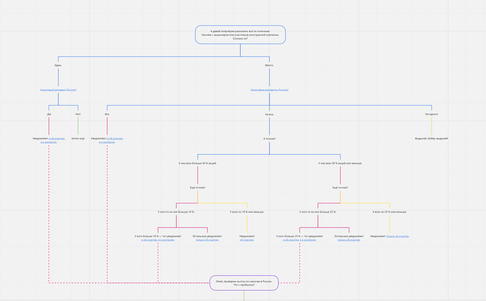

Когда предприниматель хочет выйти на международный рынок, платить поменьше налогов или защитить активы, к нему приходят мысли о регистрации иностранной компании. Достаточно прочитать пару рекламных статей, чтобы составить грубоватую, но достоверную картину мира подходящих стран, где можно открыть новый бизнес.
Чтобы платить поменьше налогов, юристы советуют Сент-Винсент, Мальту или Сейшелы. Чтобы покорить Америку — Делавэр. Чтобы заняться криптовалютой — Эстонию, Латвию или Литву. Чтобы покупать подешевле и продавать подороже — Гонконг.
Услуга «открыть офшор за две недели и тысячу евро» настолько популярна, что отказаться от неё сложнее, чем ей воспользоваться. Немного ожидания, немного затрат — и вот уже на стене висит сертификат акций, в ящике стола лежит меморандум, а на сайте красуется плашка с адресом зарубежного представительства.
Предприниматель воодушевлён открывающимися перспективами: налоги — небольшие, банки — надёжные, суды — независимые, бюрократия — минимальная… Но через несколько месяцев приходит понимание грустного факта: реальность менее радостна, чем обещали юристы.
Налоги действительно небольшие — если их грамотно планировать, точно считать и вовремя платить. Но пара ошибок — и вот уже придётся платить внезапный НДС, возвращать преждевременно выплаченные дивиденды или лететь на встречу с дотошным налоговым инспектором.
Банки действительно надёжны — если выбрать правильный. Но открыть счёт в банке с долгой историей и солидной репутацией — либо сложно, либо дорого. А если ошибиться, то деньги потеряются навсегда.
Суды действительно независимые. Но не все предприниматели могут потратить несколько лет на судебный процесс и десятки тысяч евро на крутых адвокатов.
Иногда предприниматель принимает новую реальность, иногда — нет. Совсем не важно, удалось ли наладить бизнес на новом месте или пришлось его забросить — важно, что на другом конце планеты существует иностранная компания, о которой рано или поздно узнает российская налоговая инспекция.
Если предприниматель не знал, что такое «контролируемая иностранная компания», не отправлял заполненные и подписанные формы КНД 1120411 и не прилагал «подтверждающие документы», то рано или поздно к нему придёт письмо счастья.
Письмо не покажется страшным — до тех пор, пока взгляд не наткнётся на сумму штрафа. Увидев её, предприниматель почувствует, как у него на лбу выступает холодный пот, начинают дрожать кончики пальцев и темнеть в глазах.
Всего этого можно было бы избежать, если бы предприниматель знал ответы на вопросы:
Важный момент: статья длинная, подробная и занудная. Если хочется сэкономить время — переходите сразу к сути.
Для начала нам важно понять, какой налоговый статус имеют собственники акций или долей в иностранной компании. Нас интересует налоговое резидентство каждого акционера или участника компании.
Если акции или доли записаны на российскую компанию (хоть ООО, хоть АО, хоть ТОО) — то это точно российский налоговый резидент.
Если акции или доли записаны на человека, то понадобится больше времени, чтобы решить задачу. Возьмите загранпаспорт и проверьте штампы о пересечении границы за последние 12 месяцев. Если хотя бы 183 дня из них человек был в России — то он точно российский налоговый резидент, во всех остальных случаях, кроме единственного исключения — нет.
Исключение — это специальный статус российского налогового резидентства для тех, кто прожил в России хотя бы 90 дней в 2020 году и уведомил об этом налоговую инспекцию до 31 апреля 2021 года. Если это случилось — человек стал российским налоговым резидентом по итогам 2020 года.
Возьмите список участников или акционеров иностранной компании, посчитайте количество долей или акций у каждого из них и отметьте российских налоговых резидентов.
Если в иностранной компании есть хотя бы один российский налоговый резидент — читайте дальше; если нет — проблемы с налогами в России вам не грозят.
Каждый налоговый резидент России, владеющий акциями или долями в иностранной компании, может быть участником иностранной компании (так и будем его называть — «участник») или лицом, контролирующим иностранную компанию (для простоты назовём его «контролёром»).
Участник — любой российский налоговый резидент, которому принадлежит больше 10 % акций или долей в уставном капитале иностранной компании.
Акции и доли могут принадлежать напрямую (прямое участие) или через компанию-прокси (косвенное участие). Способы не исключают друг друга — один и тот же участник может владеть частью акций иностранной компании напрямую, а частью — косвенно, через другую компанию.
Например, Василий Пупкин владеет 89 % акций компании Useless Helpers Inc. Оставшиеся 11 % акций принадлежат российскому ООО «Тысяча мелочей», единственным участником которого является всё тот же Василий Пупкин.
Посчитать доли прямого участия Василия Пупкина в иностранной компании проще простого: раз ему принадлежит целых 89 % акций, то, очевидно, он не только участник иностранной компании, но и контролёр. Осталось понять, что происходит с ООО «Тысяча мелочей».
ООО «Тысяча мелочей» — прямой участник и контролёр Useless Helpers Inc., ведь ему принадлежит 11 % акций и оно — не единственный российский налоговый резидент среди акционеров.
Но так как Василий Пупкин владеет долями в российской компании, которой, в свою очередь, принадлежат акции иностранной компании, то вдобавок к статусу прямого участника он получает ещё и статус косвенного участника.
Чтобы посчитать, сколько именно акций контролирует Василий Пупкин через российскую компанию, следует умножить его доли в процентах в ООО «Тысяча мелочей» на количество долей ООО «Тысяча мелочей» в иностранной компании: 100 % умножаем 11 % и получаем 11 %.
Возьмите список участников и акционеров иностранной компании и посчитайте проценты прямого и косвенного участия для всех российских налоговых резидентов. Рядом с каждым из российских налоговых резидентов сделайте пометку: является ли он только участником или ещё и контролёром.
Если в иностранной компании есть хотя бы один контролёр, то ему придётся уведомить об этом российскую налоговую инспекцию и, возможно, заплатить налоги в России.
Прибыль иностранной компании и дивиденды, полученные контролёром от компании, не будут облагаться налогами в России, если контролёр заявил о праве применять льготы и доказал это.
Контролёр навсегда теряет право ссылаться на льготы, если не уведомил российскую налоговую инспекцию о контроле, но получил от неё «письмо счастья» с требованием отчитаться об иностранной компании.
Два последних случая — самые частые и сложные. Разберём их по очереди.
Активная иностранная компания — любая компания, чей доход от пассивной деятельности не превышает 20 % от всех доходов за финансовый год.
Если все доходы из списка превышают 20 % — льготу применять нельзя, если нет — то можно. Чтобы посчитать доходы от пассивной деятельности, изучите бухгалтерские и финансовые отчёты иностранной компании.
Чтобы понять, можно ли воспользоваться этой льготой, проверьте, соответствует ли контролируемая иностранная компания всем критериям из списка:
Чтобы разобраться с первыми двумя критериями, особых усилий не нужно — вам вряд ли понадобится больше пяти минут и двух кликов. Но вот последний не так уж и прост. «Средневзвешенная налоговая ставка» и «эффективная ставка налогообложения» — это не константы, а переменные, поэтому их придётся аккуратно и точно посчитать.
Ошибка хотя бы в одном показателе может привести к грустным последствиям: вы либо не заплатите нужные налоги, либо заплатите ненужные. Так что откиньтесь на спинку кресла, налейте крепкого кофе, положите на стол отчётность иностранной компании, включите калькулятор — и погнали!
Сначала определим средневзвешенную ставку налога на прибыль. Формула есть в законе, но выглядит она страшновато. Хочется её немедленно переделать — и этот позыв лучше не сдерживать. Тридцать секунд — и всё выглядит не так больно.
Время считать эффективную ставку налога на прибыль, без точного знания которой невозможно довести дело до конца.
Переменных в формуле намного меньше: α перекочевала сюда из прошлой формулы с единственным изменением — величина прибыли иностранной компании уменьшается на стоимость доходов от пассивной деятельности, источником которых является российская компания, ну а к — налог на прибыль, уплаченный контролируемой иностранной компанией в стране регистрации.
Теперь всё, что нам нужно — сравнить результаты обеих формул. Если разница между ними меньше 25 %, то контролёру придётся платить в России налог на прибыль иностранной компании.
Участники и контролёры иностранных компаний должны регулярно отправлять в российскую налоговую инспекцию уведомления, даже в том случае, когда иностранная компания заброшена, не приносит прибыли или освобождена от российских налогов. Помимо этого, каждый контролёр должен отчитываться о доходах иностранной компании в своей налоговой декларации.
Если этого не сделать, то рано или поздно придётся заплатить штраф: для участников — 50,000 ₽, для контролёров — 500,000 ₽. Оплата штрафа не освобождает от обязанности отправить уведомления и приложить к ним нужные документы.
Политика «я не буду ничего отправлять и меня никто поймает» в реальности не сработает. Двадцать первый век сделал поиск информации доступным кому угодно, а наличие соглашений об информационном обмене между странами упростило общение между налоговыми органами.
Чаще всего запрос о налоговом статусе прилетает в российскую налоговую инспекцию от той страны, где открыта иностранная компания и это сразу же становится причиной долгих и неприятных бесед с чиновниками.
Поэтому советуем взять на вооружение принцип «честность — лучшая политика» и вовремя отправлять все уведомления. Разобраться в них совсем не сложно: каждую форму можно заполнить и отправить через Интернет, а инструкция по заполнению обеих форм написана понятным языком.
Разберём, что и когда отправлять.
Создали иностранную компанию? Купили немного акций? Получили их в наследство? Подарили все акции детям? Бывшая супруга отсудила половину акций? Пришёл инвестор и «размыл» доли?
Любое событие, повлиявшее на количество акций или долей в иностранной компании, запускает трёхмесячный срок уведомления. Пропустили? Штраф.
Год признания прибыли или убытка — год, в котором иностранная компания подвела итоги последнего финансового года, отчиталась о налогах в местную налоговую инспекцию и распределила или должна была распределить прибыль.
Даты уведомлений не изменятся даже в том случае, если Иван открыл компанию не 15 марта 2020 года, а 1 января или 10 июня — всё равно Ивану придётся отправить уведомление об участии в течение 3 месяцев в российскую налоговую инспекцию, отчитаться в местную налоговую в 2021 году и отправить уведомление о контроле в российскую налоговую до 30 апреля 2022 года.
Но если Иван изменит устав и, внезапно, финансовый год закончится не 31 декабря 2020 года, а, например, 1 апреля 2021 года, то все сроки сдвинутся в будущее. Признание прибыли или убытков произойдёт в 2022 году, значит, уведомление о контроле придётся отправить в российскую налоговую инспекцию до 30 апреля 2023 года.
Каждый контролёр обязан декларировать прибыль иностранной компании, отчитываясь о ней в свою налоговую инспекцию ежегодно, в тот же год, в котором должен отправить уведомление о контроле.
Контролёру придётся это делать даже в том случае, если он законно применяет льготы по налогу на прибыль иностранных компаний.
Если контролёр — человек, то он включает данные о прибыли иностранной компании в декларацию по доходам физических лиц, которую обычно называют 3-НДФЛ. Срок отправки декларации — до 30 апреля.
Если контролёр — компания, то эти же данные она включает в декларацию по налогу на прибыль. Срок отправки — до 28 марта.
Чтобы освободить контролёров иностранной компании от налогов в России, как правило, придётся не только сослаться на подходящую льготу в уведомлении, но и доказать её применимость. Единственный способ это сделать — отправить в российскую налоговую инспекцию внушительную стопку подтверждающих документов.
Хорошая новость — есть исключение: если компания зарегистрирована в Армении, Беларуси, Казахстане, Таджикистане или Узбекистане, то ничего подтверждать не нужно. Плохая новость — в остальных случаях придётся попотеть.
В юридической реальности не существует точного списка документов, гарантированного удовлетворяющих придирчивых чиновников. Разъяснения Минфина скорее мешают, чем помогают, ссылаясь примерно на следующее: «льготы — это право, а не обязанность, поэтому что пришлют — то и примем, если их не хватит — попросим прислать ещё, а если не пришлют ничего — то оштрафуем на 1,000,000 ₽». Поэтому принцип «чем больше, тем лучше» идеально подходит для сбора подтверждающих документов.
К сожалению, придётся потратиться на переводчика — российская налоговая инспекция принимает документы только на русском языке. К счастью, апостилировать и заверять перевод нотариально закон не требует.
Ни в законе, ни в рекомендациях Минфина, ни в юридических советах нет рекомендаций прислать в российскую налоговую инспекцию учредительные документы иностранной компании, поэтому если контролёр этого не сделает — ничего страшного не произойдёт.
Но по нашему опыту такие документы всё-таки лучше отправить: собрать их несложно, а убедительности в глазах налогового инспектора они добавляют.
Если контролёр — человек, то он отправляет документы одновременно с уведомлением о контроле; если контролёр — компания, то она прикладывает их к декларации по налогу на прибыль.
Хорошая практика — вместе с бухгалтерской отчётностью отправить документы, помогающие российским налоговым инспекторам убедиться в добросовестности контролёра и аудитора. Чаще всего эту задачу решает банковская выписка за весь финансовый год.
Чтобы не запутаться в участниках и контролёрах, налогах и льготах, уведомлениях и декларацих, посмотрите небольшой путеводитель. Его задача — помочь разобраться в структуре владельцев иностранных компаний, найти среди них контролёров и, если они есть, проверить возможность применить льготы по налогам в России. Чтобы пройти по нему, просто кликните по схеме.
Усвоить теорию — только половина дела. Другая половина — научиться применять её на практике. Поэтому перед тем, как рваться в бой, имеет смысл изучить несколько примеров, обдумать их, найти решение и проверить его.
Каждая ошибка — не повод расстроиться, а причина найти ещё больше материалов по теме контролируемых иностранных компаний, почитать законы и разобраться с тем, что оказалось не понятным с первого раза.
Придумав ответ, проверьте себя, выделив замазанный чёрным фоном текст.
Родион Раскольников — единственный акционер инкомпании "Portable Axes" Inc. в США. Компания создана 15 июня 2021 года. Финансовый год компании заканчивается 31 декабря 2021 года. Родион планирует распределить прибыль компании только в апреле 2022 года, но уже сейчас ему ясно одно: топоры пользуются слабым спросом в США и прибыль не превысит даже 1,000 $.
За последние 12 месяцев Родион был в России 321 день, покинув страну на 30 дней в декабре 2020 года и на 14 дней — в марте 2021 года. В ближайшие пару лет Родион не планирует покидать Россию вообще.
Какие уведомления придётся отправить Родиону? Когда именно? Придётся ли Родиону платить в России налог c прибыли "Portable Axes" Inc.?
Родион находился в России больше 183 дней за последние 12 месяцев — значит, он российский налоговый резидент. Родион — единственный резидент среди акционеров компании "Portable Axes Inc.", следовательно, он и участник (ему принадлежит больше 10 % акций), и контролёр (единственный резидент, которому принадлежит больше 50 % акций).
"Portable Axes Inc." зарегистрирована 15 июня 2021 года — значит, Родион отправит уведомление об участии до 15 сентября 2021 года. Родион распределит прибыль компании только в 2022 году, значит, уведомление о контроле он отправит до 30 апреля 2023 года. Прибыль компании явно меньше 10,000,000 ₽, значит, Родиону не придётся платить налог на прибыль иностранной компании в России.
Ромео и Джульетта — итальянцы, но Ромео живёт в Италии, а Джульетта — в России. За последние 12 месяцев Ромео ни разу не приезжал в Россию, зато Джульетта — ни разу её не покидала.
В январе 2019 года они зарегистрировали компанию "Dramatic Theatre Promotions", S.P.A. в Италии. Ромео — собственник 91 % акций, а Джульетте принадлежит только 9 %. Собрание акционеров решило, что лучше для всех будет сходить в российскую налоговую и честно заплатить все штрафы.
Какие штрафы заплатит Джульетта?
Проверяем, кто из акционеров — российский налоговый резидент. Очевидно, что это только Джульетта, ведь Ромео безвылазно сидел в Италии. Джульетте принадлежит только 9 % акций (меньше, чем и 10 %, и 50 %), значит, контролёром она не является, да и участником тоже. Никаких уведомлений никому слать не нужно, штрафов нет, отчитываться не нужно, ура!
Алёша Попович, Добрыня Никитич и Илья Муромец — собственники долей в ООО «Вектор», зарегистрированном в Омске. Алёше принадлежит 10 % долей в уставном капитале, а Добрыне и Илье — по 45 %. Все они ни разу не покидали Россию. А ещё у Алёши Поповича есть 100 % долей в ООО «Лютики-одуванчики» — но это так, к слову пришлось.
1 мая 2021 года богатыри вложили деньги в выгодный бизнес, купив у Тугариноса Попадополуса (гражданина и налогового резидента Кипра) акции управляющей компании "Seaview Exclusive Properties Management" Inc. Устав компании писали очень хитрые кипрские юристы, поэтому 2021 финансовый год закончится только 1 июня 2022 года, а прибыль распределят до 31 декабря 2022 года.
Сделку сопровождали другие кипрские юристы, но тоже очень хитрые. В итоге акции распределились следующим образом: ООО «Вектор» купило у Тугариноса 79 % акций компании, Алёша Попович купил у него же 11 % акций лично для себя, а Тугаринос остался миноритарием с 10 % акций.
Кому кого и когда уведомлять?
Как всегда, сначала проверим налоговое резиденство. Тугаринос явно не налоговый резидент России, поэтому о нём смело забываем. А вот ООО «Вектор» и Алёша Попович — очевидно, налоговые резиденты России: «Вектор» — потому что российская компания, а Алёша — потому что ни разу в жизни не покидал страну.
Итого у нас только два участника и контролёра в инкомпании: ООО «Вектор» и Алёша (критерий «больше одного российского налогового резидента и у каждого больше 10 % акций»). Проблема решена, расходимся, всем спасибо?
Нет. Типичная ошибка, которую многие из нас допускали — забыли про косвенный контроль. Доли в уставном капитале ООО «Вектор» принадлежат Алёше, Добрыне и Илье. Было бы неплохо их посчитать, а то трём богатырям и их омской компании прилетят четыре штрафа, по полмиллиона рублей каждый.
Алёше принадлежит 10 % долей в ООО «Вектор». Умножаем 10 % участия Алёши в уставном капитале ООО «Вектор» на 79 % акций ООО «Вектор» в "Seaview Exclusive Properties Management" Inc., получаем 7,9 % косвенного участия. Прибавляем к ним 11 % акций, которые уже есть у Алёши — и получаем итоговые 18,9 % участия.
Доли косвенного участия Добрыни и Ильи считаем так же, но с двумя поправками. Первая — у каждого по 45 % долей в уставном капитале ООО «Вектор», а вторая — нет ни одной акции "Seaview Exclusive Properties Management", которая принадлежала бы им напрямую. Умножаем 45 % на 79 % — и получаем по 35,55 % участия.
Готово, вы великолепны. ООО «Вектор», Алёша Попович, Добрыня Никитич и Илья Муромец уведомляют свои налоговые инспекции об участии в иностранной компании до 31 июля 2021 года, указав следующие доли: у Алёши — 18,9 % участия, из них 7,9 % — косвенного, а 11 % — прямого; у ООО «Вектор» — 79 %; у Добрыни и Ильи — по 35,5 % косвенного участия. Под занавес — вопрос без ответа: а что делать с ООО «Лютики-одуванчики»?